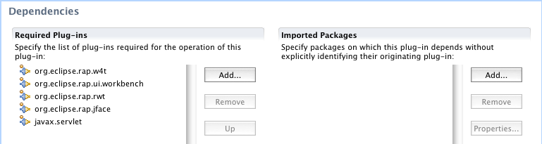
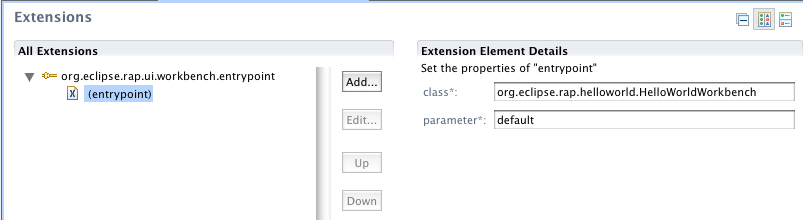
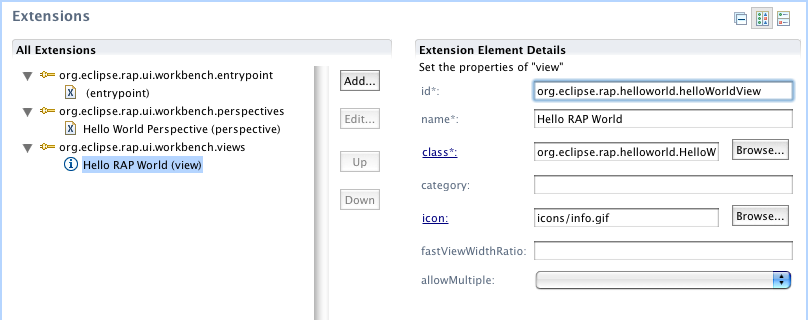

Create a new project
Create a new Project by right-clicking in the package explorer and select New > Project. In the upcoming "New Project"-wizard, select Plug-in Project from the section Plug-in Development.
Your newly created plug-in project depends on a number of plug-ins that You need to enter as required plug-ins. To do so, open the project's MANIFEST.MF with the Plug-in Manifest Editor and go to the Dependencies page.
Add the following plug-in to the list of Required Plug-ins.
org.eclipse.rap.uiAdd the following servlet packages to the list of Imported Packages.
javax.servletjavax.servlet.httpso that the Dependencies page looks like this:
Create your package
Before creating any files or classes you should create a package org.eclipse.rap.helloworld
(or another package name you like) to contain your source files.
Create a workbench advisor HelloWorldWorkbenchAdvisor
extending the WorkbenchAdvisor class
The WorkbenchAdvisor is necessary to provide the id of the perspective
to the workbench. Therefore you need to implement the only method
getInitialWindowPerspectiveId() to return the id of your
perspective.
Example code:
package org.eclipse.rap.helloworld;
import org.eclipse.ui.application.WorkbenchAdvisor;
public class HelloWorldWorkbenchAdvisor extends WorkbenchAdvisor {
public String getInitialWindowPerspectiveId() {
return "org.eclipse.rap.helloworld.perspective";
}
}
For now we ignore the fact that the perspective id does not yet exist but keep in mind to label the perspective extension with the same id that we used here.
Create the HelloWorldWorkbench class implementing
IEntryPoint.
The HelloWorldWorkbench is the entry point of the application and responsible
for creating the UI. Therefore it must implement the interface
IEntryPoint with createUI() as the only method.
Example code:
package org.eclipse.rap.helloworld;
import org.eclipse.rwt.lifecycle.IEntryPoint;
import org.eclipse.swt.widgets.Display;
import org.eclipse.ui.PlatformUI;
public class HelloWorldWorkbench implements IEntryPoint {
public int createUI() {
Display display = PlatformUI.createDisplay();
WorkbenchAdvisor advisor = new HelloWorldWorkbenchAdvisor();
int result = PlatformUI.createAndRunWorkbench( display, advisor );
return result;
}
}
Create an entry point
In the Plug-in Manifest Editor, switch to the Extensions page.
Add an entrypoint extension for the
org.eclipse.rap.ui.entrypoint and enter these details:
org.eclipse.rap.helloworld.helloWorldWorkbenchorg.eclipse.rap.helloworld.HelloWorldWorkbenchdefaultCreate the HelloWorldView view extending class
ViewPart
The HelloWorldView is responsible for creating the view to display the output
of your application. The class needs to extend ViewPart and
provide an implementation for the method createPartControl().
Then implement the method createPartControl in that
HelloWorldView
You then need to implement the method createPartControl to
create and add the components you want in your view.
Example code:
package org.eclipse.rap.helloworld;
import org.eclipse.swt.SWT;
import org.eclipse.swt.widgets.Composite;
import org.eclipse.swt.widgets.Label;
import org.eclipse.ui.part.ViewPart;
public class HelloWorldView extends ViewPart {
public void createPartControl( Composite parent ) {
Label label = new Label ( parent, SWT.NONE );
label.setText( "Hello RAP World" );
label.setSize( 80, 20 );
}
public void setFocus() {
// do nothing
}
}
Now you need to declare this HelloWorldView as an extension to
org.eclipse.ui.views with these parameters:

org.eclipse.rap.helloworld.helloWorldViewHello Worldorg.eclipse.rap.helloworld.HelloWorldViewImportant note: If the icon path does not exist, an exception is thrown.
Create a Perspective implementing
IPerspectiveFactory
The Perspective is responsible for defining the layout of your UI. Therefore
you need to implement createInitialLayout() to set up the layout
of your UI and add the views (only one view in the HelloWorld application).
Please note that you need to specify the id of your view,
which needs to be distinguished from the class name.
Example code:
package org.eclipse.rap.helloworld;
import org.eclipse.ui.IFolderLayout;
import org.eclipse.ui.IPageLayout;
import org.eclipse.ui.IPerspectiveFactory;
public class Perspective implements IPerspectiveFactory {
public void createInitialLayout( IPageLayout layout ) {
String editorArea = layout.getEditorArea();
layout.setEditorAreaVisible( false );
IFolderLayout left = layout.createFolder( "left",
IPageLayout.LEFT,
0.25f,
editorArea );
left.addView( "org.eclipse.rap.helloworld.helloWorldView" );
}
}
Then the Perspective needs to be declared as an extension to org.eclipse.ui.perspectives.
org.eclipse.rap.helloworld.perspectiveHello World Perspevtiveorg.eclipse.rap.helloworld.Perspective